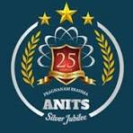

Anil Neerukonda Institute of Technology & Sciences (ANITS) has a dedicated Training & Placement Department led by Prof. P. Padmaja and supported by 18 Faculty Coordinators. The department is committed to maximizing student placements in both software and core engineering sectors through continuous skill development and industry engagement ANITS provides comprehensive Campus Recruitment Training (CRT) covering Quantitative Aptitude, Logical Reasoning, Verbal Reasoning, English Communication, Group Discussions, and Interview Skills These programs are conducted by experienced in-house trainers to prepare students for campus recruitment Recruiter feedback and alumni performance are regularly analyzed to improve training strategies and align them with industry requirements. The institute offers excellent placement infrastructure, including a 400-seat air-conditioned auditorium computer laboratories and examination halls accommodating over 500 students, and well-equipped interview rooms for smooth recruitment processes. Through dedicated efforts, continuous improvement, and strong collaboration with industry, ANITS has consistently achieved an excellent placement record. The institute is recognized as one of the Top Ten Most Preferred Private Engineering Colleges in Andhra Pradesh by APSCHE among more than 700 engineering institutions